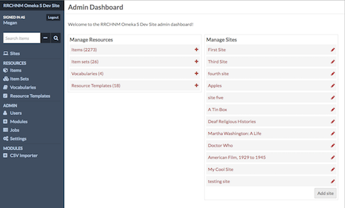
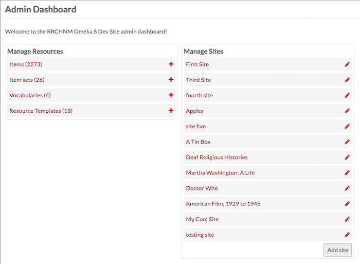
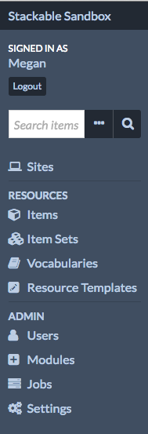
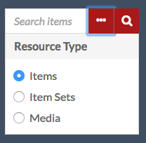
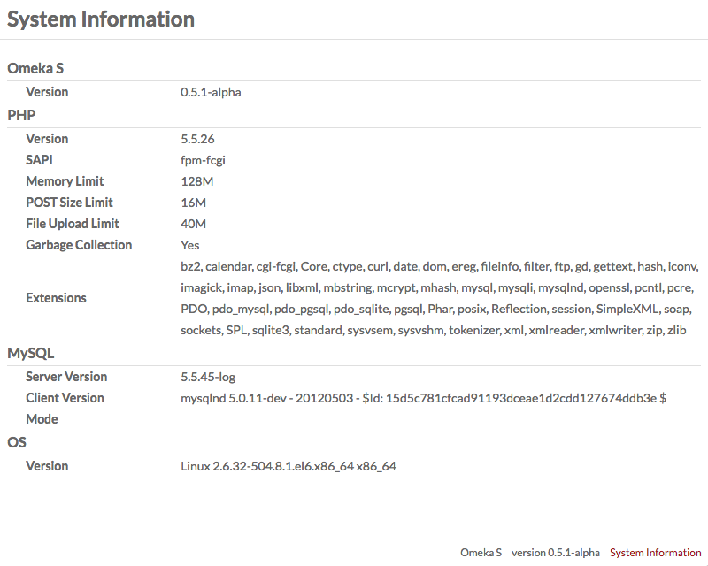

Le tableau de bord gère le contenu partagé par tous les sites OmekaS et les fonctionnalités de base de l'installation OmekaS.
<<<<<<< HEAD This screencast walks you through the main features of the dashboard and navigating your Omeka S installation.
Admin Main Page
Page principale de l'administrateur
[FR] Traduction française - fr-v0.1
Lorsqu'un utilisateur se connecte, la première page qu'il voit est le tableau de bord de l'administrateur.
Remarque: selon le rôle de l'utilisateur, il est possible que vous ne voyiez pas exactement les mêmes options dans la navigation de gauche. Voir ci-dessous pour plus de détails

Outre la navigation de gauche présente sur toutes les pages (voir ci-dessous), le tableau de bord de l'administrateur propose aux utilisateurs deux zones: Gérer les ressources et Gérer les sites.
<<<<<<< HEAD The Manage Resources box displays the following resources with their total count: Items, Item Sets, Vocabularies, and Resource Templates. Clicking on the label of the Resource will take you to the browse page; clicking the Plus button to the right of the label will take you to the add page for that resource type. ======= La zone Gérer les essources affiche les ressources suivantes avec leur nombre total: Contenus , Collections , Vocabulaires, et Modèles de ressources. En cliquant sur le libellé des ces entrées, vous accédez à la page de navigation. En cliquant sur le bouton "Plus" situé à droite de l'étiquette, vous accédez à la page d'ajout pour ce type de ressource.
[FR] Traduction française - fr-v0.1

<<<<<<< HEAD The Manage Sites box lists the Sites on the install. Clicking on the site name will take you to the public view of the site; clicking the edit (pencil) button will take you to the Edit Site Info page for that site. ======= La zone Gérer les sites répertorie les Sites sur l’instance. En cliquant sur le nom du site, vous accédez à la vue publique du site. En cliquant sur le bouton Modifier (crayon), vous accédez à la page Modifier les informations sur le site de ce site.
[FR] Traduction française - fr-v0.1
Navigation à gauche
Le contenu suivant apparaît sur le côté gauche du tableau de bord de l'administrateur et sur toutes les pages administratives.

Dans le coin supérieur gauche de l'écran se trouve un lien affichant le titre de l'installation, qui vous ramène toujours au tableau de bord de l'administrateur.
Directement sous le titre de l'installation, vous trouverez le message «Connecté en tant qu'utilisateur », où Utilisateur correspond au nom complet de la personne connectée. À proximité du nom d'utilisateur (en bas ou à droite, en fonction de la largeur de la fenêtre) se trouve le bouton permettant de se déconnecter .
Au-dessous des informations utilisateur se trouve un champ de recherche avec une option de recherche avancée (ellipses) en plus du bouton de recherche (loupe). Utilisez-le pour rechercher toutes les ressources de l'instance.
<<<<<<< HEAD Advanced search options (the ellipses) allow you to refine the search by Resource Type, limiting it to Items, Item Sets, or Media by clicking the radio button next to the Resource Type you want to search. ======= Les options de recherche avancées (les ellipses) vous permettent d’affiner la recherche par type de ressources, en la limitant aux contenus, collections ou supports en cliquant sur le bouton radio situé en regard du type de ressource que vous souhaitez rechercher.
[FR] Traduction française - fr-v0.1

La navigation de gauche du tableau de bord est divisée en sections relatives aux fonctions et aux accès des utilisateurs:
- Sites: répertorie et donne accès à tous les sites de l'installation d'OmekaS. (Icône "ordinateur")
- Ressources : création de contenu et gestion des métadonnées
- Contenus : gérer les contenus individuels de votre instance. (Icône "boîte")
- Collections: gérer des groupes d'éléments agrégés. (Icône "Plusieurs cases")
- Vocabulaires : gérez les normes de métadonnées pour votre installation. (Icône "livre fermé")
- Modèles de ressources : gestion des ensembles prédéfinis (champs) à utiliser lors de la création d'éléments. (Crayon "icône carrée")
- Admin: administration au niveau de l'installation (notez que certains de ces onglets peuvent ne pas être visibles à tous les niveaux d'utilisateurs)
- Utilisateurs : gérez les utilisateurs pour l'ensemble de l'installation et des sites individuels. (icône "personne tête et épaules")
- Modules : ajouter des fonctionnalités à vos sites. (icône "signe plus dans une icône carrée")
- Tâches : affiche les tâches activées par l'utilisateur en cours d'exécution. NB: les tâches ne s'affichent que lorsqu'elles sont en cours d'exécution. (Icône "trois barres")
- Paramètres : gérez les paramètres globaux de tous les sites, le tableau de bord de l'administrateur et les tableaux de bord du site. (Icône "rouages")
<<<<<<< HEAD - Sites: lists and provides access to all of the sites on the OmekaS install. (Computer icon) - Resources: content creation and metadata management - Items: manage the individual resources of your install. (Box icon) - Item Sets: manage aggregated groups of items. (Multiple boxes icon) - Vocabularies: manage the metadata standards for your install. (Closed book icon) - Resource Templates: manage predefined sets of properties (fields) to use when creating items. (Pencil in a square icon) - Admin: installation-level administration (note that some of these tabs may not be visible to all user levels) - Users: manage users for the whole install and individual sites. (head and shoulders person icon) - Modules: add functionality to your sites. (Plus sign in square icon) - Jobs: displays the user-activated tasks which are currently running. NB: jobs only display when they are running. (Three bars icon) - Settings: manage the global settings for all sites, the admin dashboard and the site dashboards. (Gears icon) ======= Si vous avez installé des modules, ils peuvent apparaître dans la section admin de la navigation de gauche, sous les paramètres.
[FR] Traduction française - fr-v0.1
Notez que les utilisateurs avec des autorisations plus limitées ne verront que certaines de ces options de navigation.
Informations système
Dans le coin inférieur droit se trouve un court affichage de la version actuelle d’Omeka S. Cliquez sur le lien intitulé Informations système pour afficher une page complète avec des détails.
<<<<<<< HEAD

=======

[FR] Traduction française - fr-v0.1